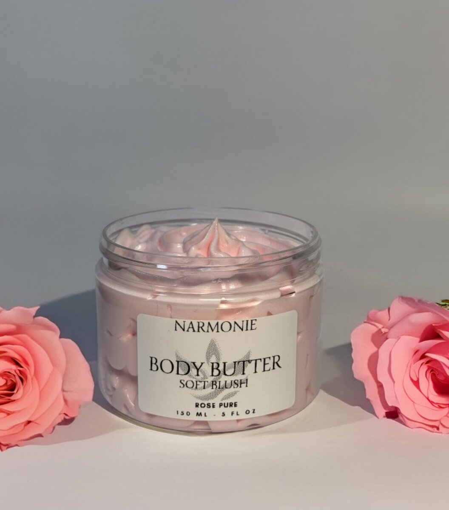
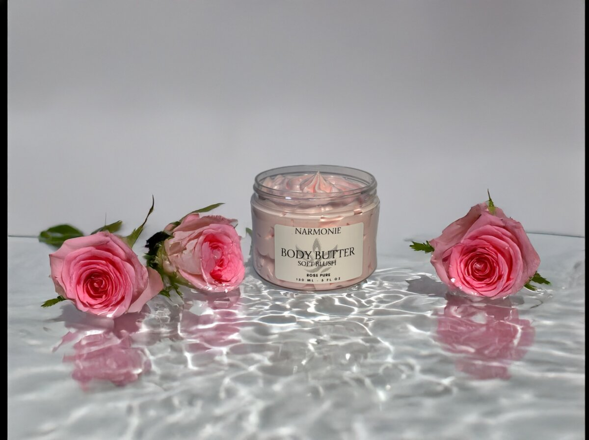
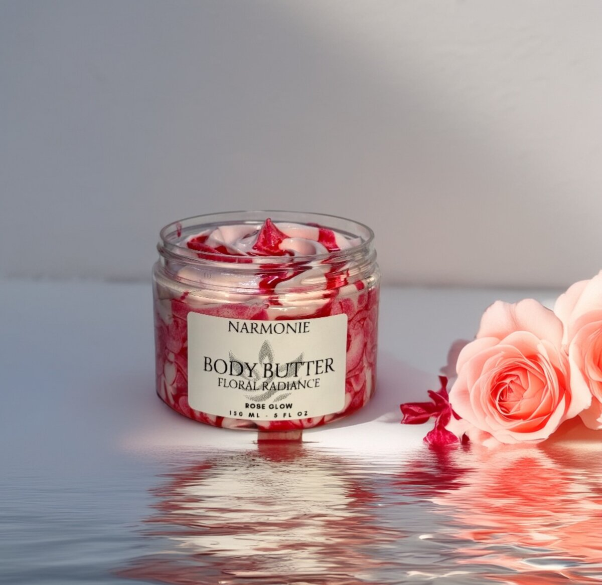
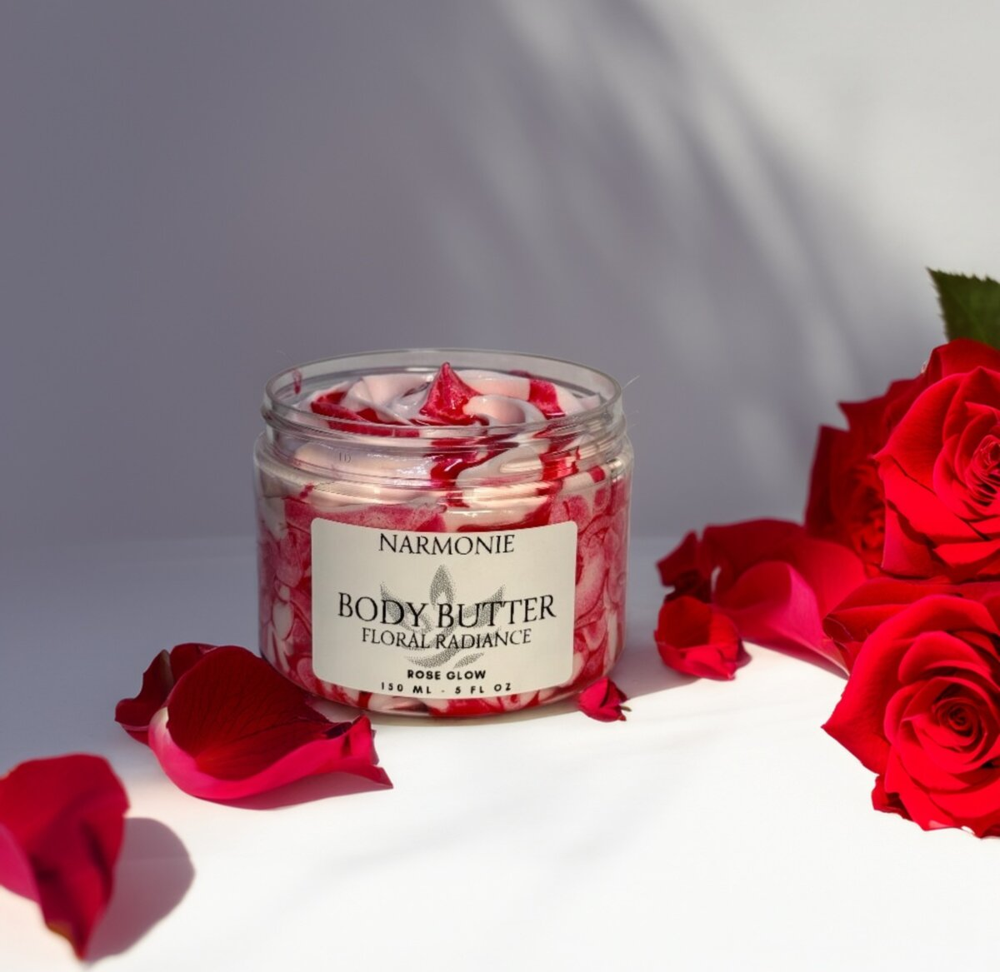
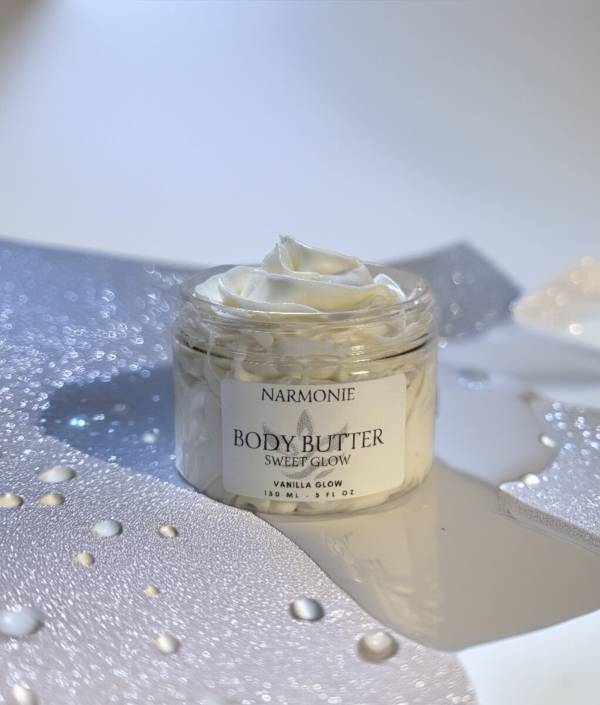
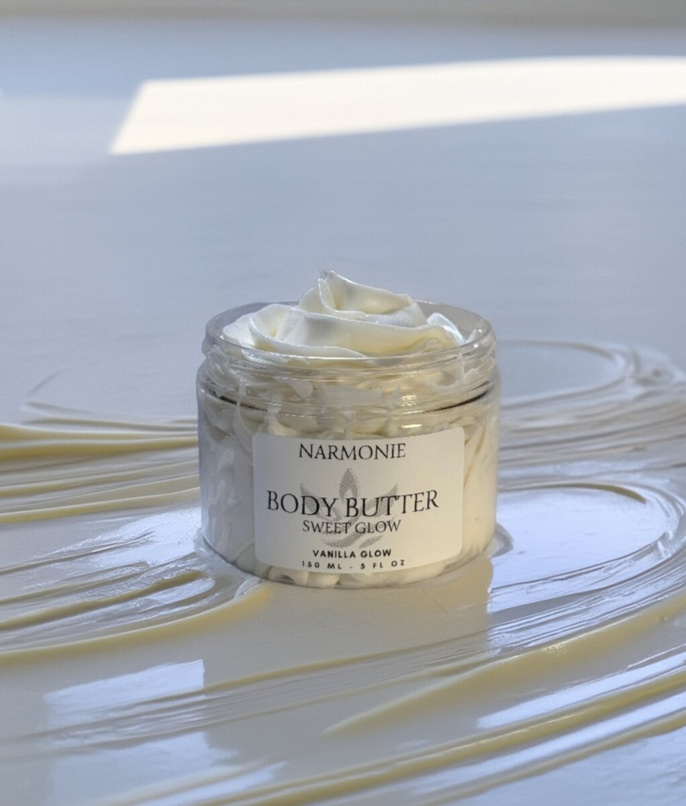
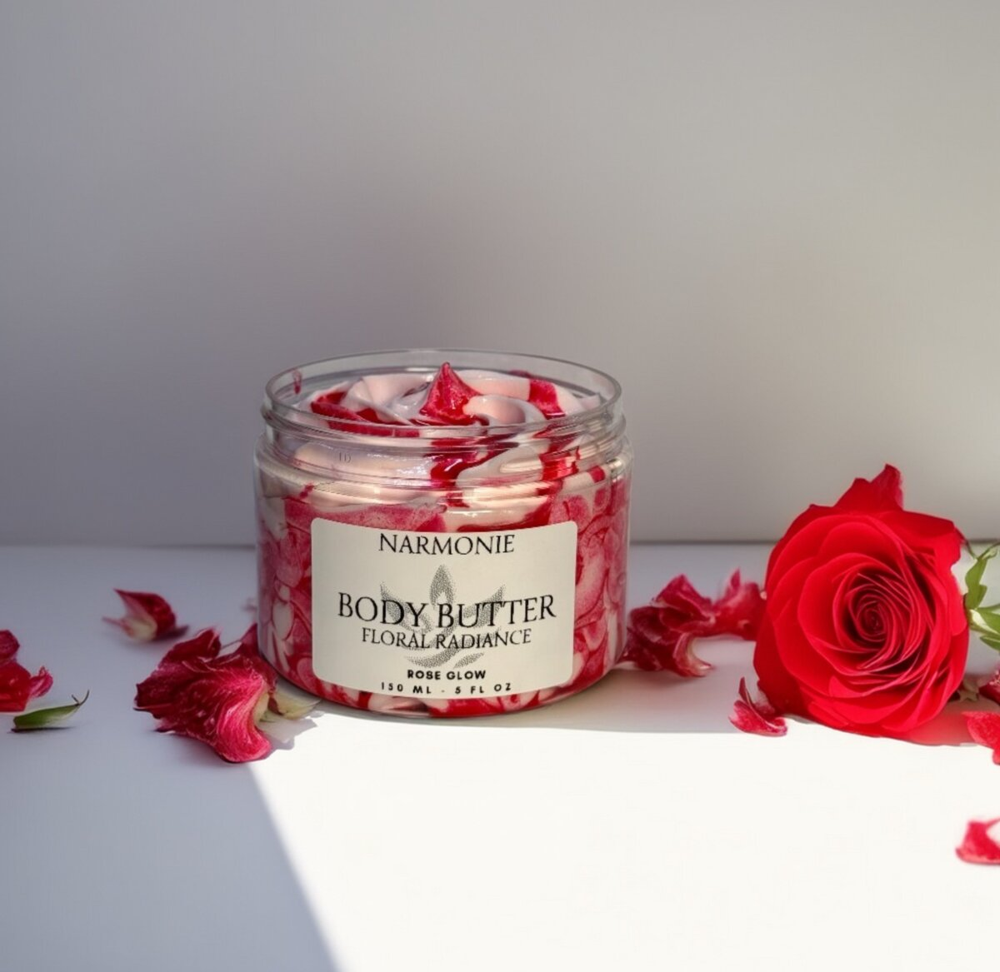
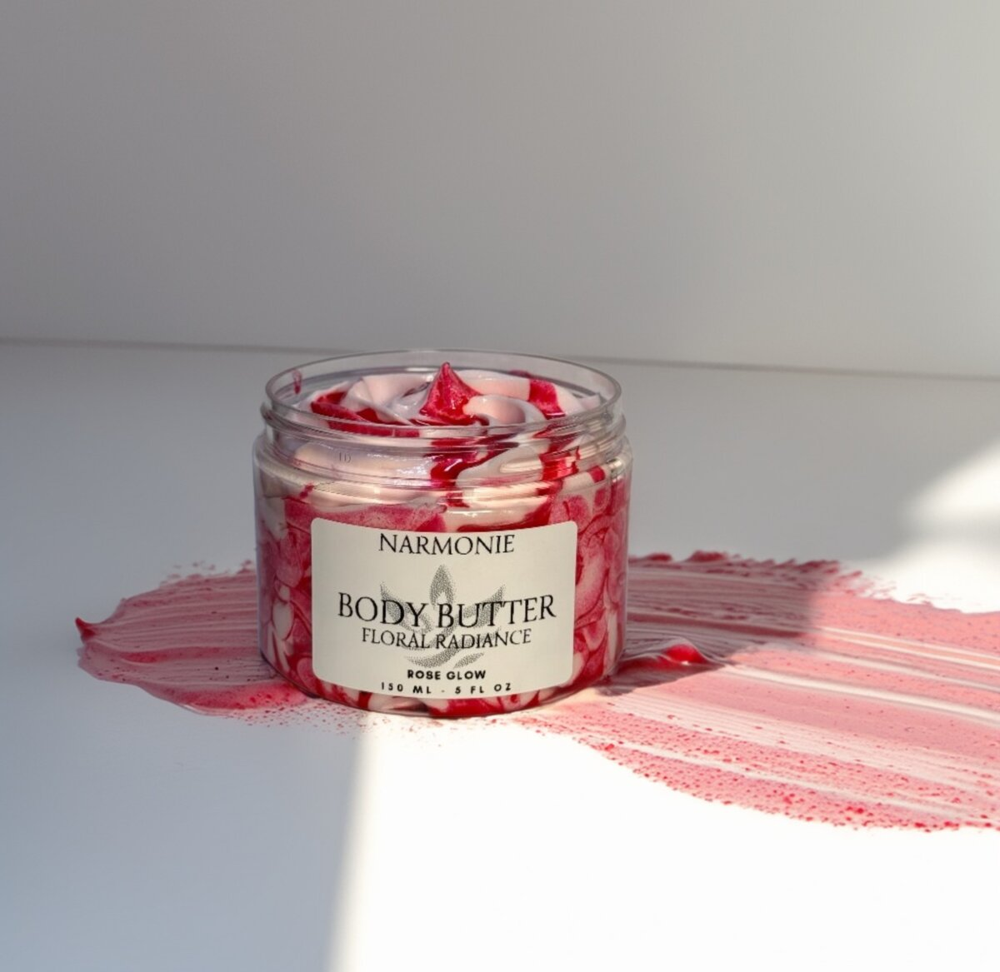
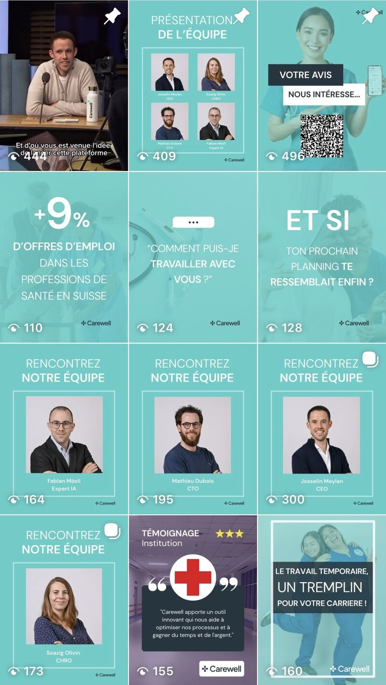

Comment ça marche, concrètement ?
Un mois de réseaux sociaux pour un artisan qui rénove des salles de bain. D'un côté, un plan ; de l'autre, des publications au coup par coup, quand on y pense.
- 1Un thème tiré des questions de vos clients
- 2Une heure de tournage
- 3Déclinée en huit contenus
- 4Planifiés et validés par vous
- 5Votre feed reste vivant
- 6Le bilan du mois
- 1« Il faudrait poster quelque chose »
- 2Une photo prise à la va-vite
- 3Publiée sans légende travaillée
- 4Puis trois semaines sans rien
- 5Le compte paraît à l'abandon
Les questions que vos clients posent le plus :
- Avant / après de la salle de bain
- Martin répond aux trois questions
- Gros plans : carrelage, joints, robinetterie
- L'équipe au travail
Ce qui a le mieux marché : l'avant / après. Le mois prochain, on en fait deux.
Contre-jour, chantier en désordre, rien qui montre le résultat.
atelier.martin Chantier en cours #renovation
9 j'aime · 0 commentaireLes semaines chargées passent avant, et c'est normal.
Exemple fictif. Les chiffres du bilan sont donnés à titre d'illustration : ils dépendent de votre secteur, de votre audience et de votre régularité.
Est-ce adapté à votre activité ?
Vous savez qu'il faudrait publier, sans jamais trouver le temps
Vos clients vous cherchent sur Instagram, Facebook ou LinkedIn avant de vous appeler, mais votre dernière publication date. Un plan mensuel et une heure de tournage suffisent pour rester présent toute l'année, sans y penser chaque semaine.
Votre image n'est pas encore claire
Sans logo net, couleurs ni ton défini, chaque publication part dans une direction différente. Nous commençons alors par poser votre identité visuelle, avec notre service Branding & Design, avant de produire du contenu.
Vos clients ne passent pas par les réseaux
Si vos clients vous trouvent surtout en cherchant sur Google au moment où ils ont un besoin, les réseaux sociaux ne seront pas votre premier levier. Nous vous le dirons, et nous vous orienterons vers le référencement ou Google Ads.
Nous regardons d'abord où se trouvent vos clients et ce qu'ils attendent de vous. Si les réseaux sociaux ne sont pas le bon canal, nous vous le disons au premier échange, avant tout devis.
Vous vous reconnaissez dans l'une de ces situations ? Le plus simple est d'en parler : un premier échange suffit pour voir ce que vos réseaux pourraient raconter.
Parlons de votre projetCe que Wanderful prend en charge
-
La ligne éditorialeLes thèmes du mois, choisis à partir des questions que vos clients vous posent vraiment, de vos temps forts et de ce qui a marché le mois précédent.
-
Le tournage et les photosUne séance chez vous ou sur un chantier, préparée à l'avance avec une liste de plans, pour repartir avec de quoi alimenter tout le mois. Quand c'est plus adapté, certains visuels sont produits avec l'IA.
-
Le montage et les visuelsReels, carrousels, stories et publications LinkedIn, chacun au bon format et aux couleurs de votre marque.
-
Les textesLégendes, accroches et appels à l'action écrits dans votre ton, pour que l'on vous reconnaisse sans voir le logo.
-
La validation et la publicationTout arrive dans votre espace client avec un aperçu du feed. Vous validez ou demandez une modification, puis les publications partent aux dates prévues.
-
Les commentaires et messagesNous répondons aux commentaires courants et vous transmettons tout de suite les messages qui ressemblent à une demande de client.
Les comptes restent à votre nom : vous en gardez l'accès complet, et tous les contenus produits vous appartiennent.
Comment nous travaillons
Cadrage
Nous regardons vos comptes actuels, ceux de votre secteur et les questions que vos clients vous posent. Nous en sortons vos réseaux prioritaires, votre ton et les premiers thèmes.
Tournage
Une heure par mois, préparée à l'avance : vous savez ce qui sera filmé, et vous n'avez rien à apprendre par cœur.
Validation
Les contenus du mois arrivent dans votre espace client avec un aperçu du feed. Vous validez en une quinzaine de minutes, puis tout est programmé.
Bilan
Chaque mois : ce qui a été vu, ce qui a fait réagir, les messages reçus, et ce que nous changeons pour le mois suivant.
Ce dont nous avons besoin de votre côté : un accès à vos comptes, une heure de tournage par mois, et vos retours sur le calendrier. Les questions que vos clients vous posent au téléphone sont souvent nos meilleures idées de contenu : notez-les.
Ce que vous obtenez, concrètement
Un feed régulier
Des publications chaque semaine, même pendant vos mois les plus chargés : votre compte montre que vous êtes là.
Du contenu qui vous ressemble
Vos chantiers, votre équipe, vos réponses : des contenus tournés chez vous, pas des images de banque d'images.
Vos soirées libérées
Une heure de tournage et un quart d'heure de validation par mois. Vous n'avez plus à vous demander quoi publier.
Des chiffres lisibles
Un bilan court chaque mois, avec les messages et demandes reçus, pas seulement des mentions « j'aime ».
Notre façon de travailler
Nous partons de ce que vos clients veulent savoir, pas de ce qui est à la mode cette semaine. Une question qui revient au téléphone fait presque toujours un bon contenu : elle rassure ceux qui hésitent encore et vous évite de répéter la même réponse.
Nous préférons la régularité au coup d'éclat. Un compte qui publie chaque semaine, même simplement, inspire plus confiance qu'un compte qui alterne une vidéo travaillée et trois mois de silence.
Nous appliquons cette méthode à nos propres réseaux, et elle s'appuie sur la formation de Nassima Rizzotti, fondatrice de Wanderful, en marketing et en analyse de données à HEC Lausanne. Voir notre approche en détail.
« Très bonne expérience avec Wanderful Marketing. Ils nous ont aidés à construire toute notre stratégie de branding avec création du logo, identité visuelle et stratégie digitale. Une équipe jeune, créative et à fond sur l'IA ! Je vous conseille vivement. »
Notre travail en action
Des contenus réels produits pour nos clients.









Refonte Instagram Carewell
Healthcare recruitment Suisse · 12+ posts originaux
Création complète du feed Instagram : visuels branded, ligne éditoriale claire, mix entre pédagogie (stats secteur santé), témoignages clients, présentation équipe et contenus engageants.
Questions fréquentes
Dois-je apparaître à l'écran ?
Non. Beaucoup de contenus fonctionnent sans visage : mains au travail, avant / après, détails, coulisses. Si vous êtes à l'aise devant la caméra, quelques phrases face à l'objectif suffisent, et nous vous guidons pendant le tournage.
Sur quels réseaux ?
Là où se trouvent vos clients, et pas forcément partout. Pour un artisan ou un commerce local, Instagram et Facebook suffisent souvent ; pour une entreprise qui vend à d'autres entreprises, LinkedIn passe en premier. TikTok vient en plus, quand votre public y est.
Combien de temps cela me prend-il ?
En général une heure de tournage par mois et une quinzaine de minutes pour valider le calendrier dans votre espace client. Le reste est pris en charge par Wanderful.
Rien n'est publié sans mon accord ?
Non. Chaque contenu apparaît dans votre espace client avec un aperçu du feed. Vous validez, commentez ou demandez une modification avant toute publication.
Utilisez-vous l'IA pour les contenus ?
Pour certains visuels et certaines vidéos, oui, quand c'est plus rapide et que le résultat est à la hauteur : vous en voyez des exemples plus haut. Les contenus qui montrent votre travail, votre équipe et vos clients sont tournés chez vous.
Comment ça se passe côté budget ?
Un forfait mensuel convenu à l'avance, établi par écrit après le premier échange, avec le détail de ce qui est inclus. Un éventuel budget de publicité sponsorisée est séparé et réglé directement par vous.
Ce qui détermine le devis :
Parlons de votre projet
Un premier échange pour voir où se trouvent vos clients et ce que vos réseaux pourraient leur raconter, mois après mois.